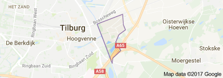

Geesten in Moerenburg
Een spel over de natuur en historie in Moerenburg voor kinderen groep 8 basisschool en brugklassers V.O.

Dit is een gps speurtocht door Moerenburg die je kan lopen met je mobiel.
- Zorg dat je gps aanstaat.
(voor android moet het op nauwkeurig modus staan
om dit aan te passen ga naar: instelling > Locatie > Modus)
- Dat je internet verbinding hebt.(bij voorkeur Chrome, kost 5Mb)
- Zorg dat je batterijen geladen zijn.
- De tocht duurt ongeveer 75 minuten.
- Blijf op de paden.
- Wees voorzichtig en let op het verkeer
- Volg de aanwijzingen op je mobiel
- De start is bij Zomerlust..
- Vertrek daar in oostelijke richting.
Start